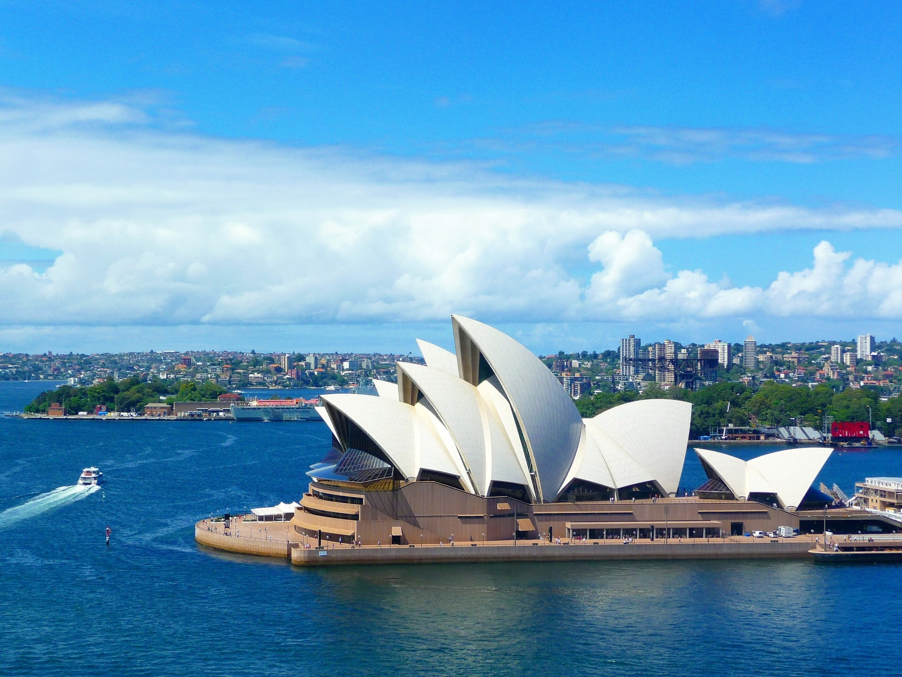
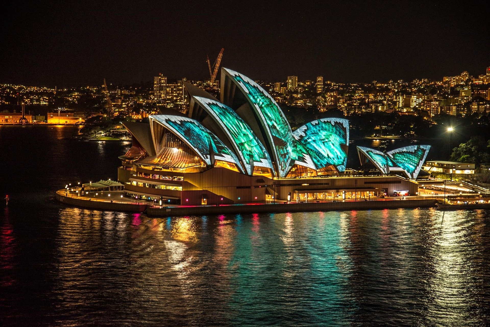

L'Australie
L'Australie est un pays qui mêle à la fois des splendides villes mais également
des paysages deserts surnaturels. Un conseil pour pouvoir visiter ce pays de fond en comble est de louer
un
camping-car puis faire des arrêts dans les petits campings typiques du fin fond de l'Australie. Vous aurez
sûrement
la chance de croiser toutes sortes d'animaux sauvages tous les plus impressionnant les uns que les
autres en partant
du pingouin jusqu’au coyote en passant par toutes sortes d’insectes tous plus étranges les uns que les
autres.